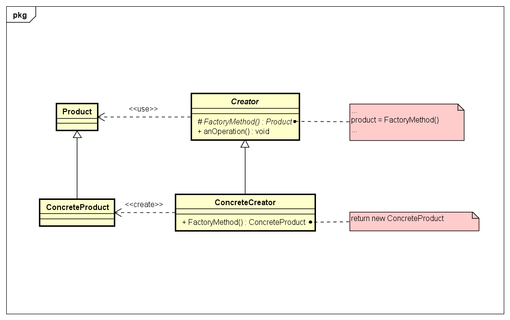

Factory Method
Descrição do padrão:
Define uma interface para criar um objeto, mas deixa subclasses decidirem qual classe instanciar, ou seja, o Factory Method permite que uma classe adie a instanciação para subclasses. Também é conhecido como Virtual Constructor.
UML do padrão:

Descrição do exemplo do livro:
Criar utilizando o padrão de projeto Factory Method, pizzarias nas quais o cliente possa escolher o tipo de pizza desejada. As pizzarias oferecem os mesmos sabores, mas características diferentes para um mesmo tipo de pizza.